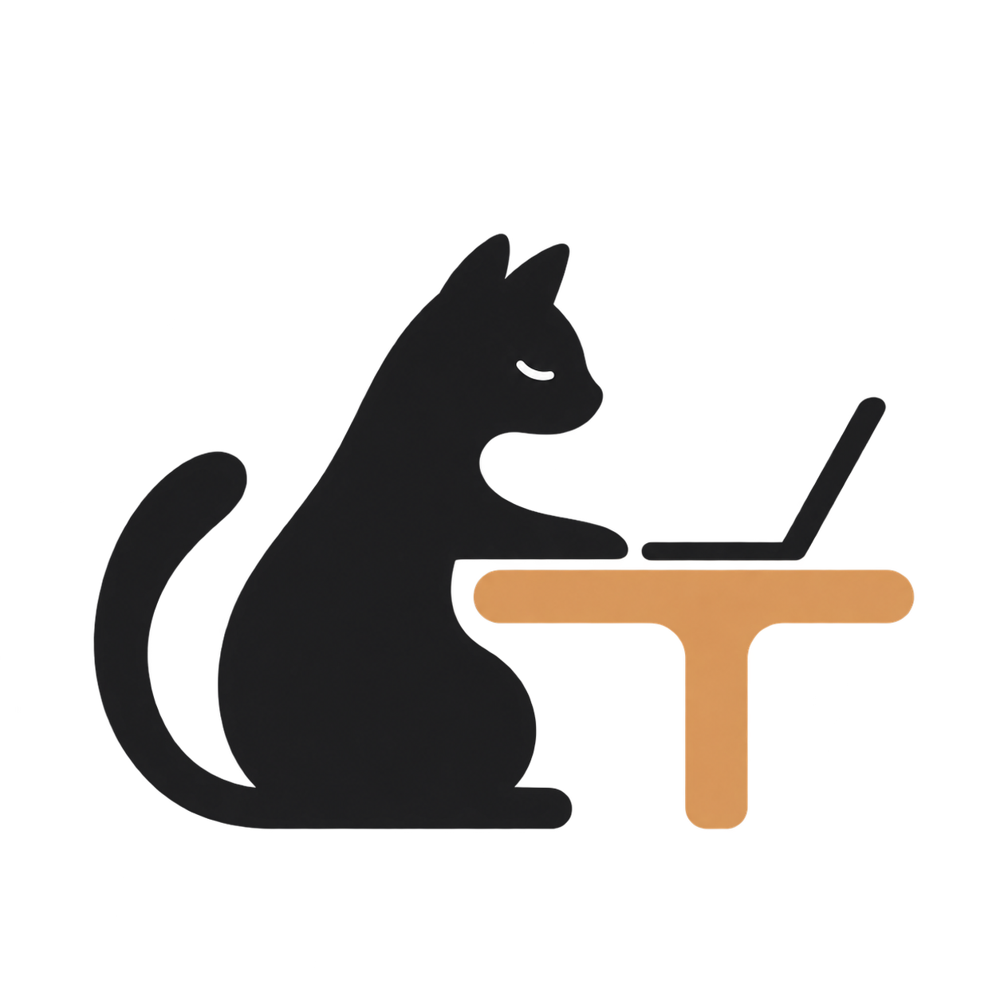

Building quietly
书台 · Workspace · Create
Syutoi
Make Space for Yourself.
一个围绕个人工作空间展开的独立项目。
从博客主题与写作工具开始，慢慢做一些安静、有趣、真正想长期使用的东西。
正在准备中，稍后见。

书台 · Workspace · Create
Make Space for Yourself.
一个围绕个人工作空间展开的独立项目。
从博客主题与写作工具开始，慢慢做一些安静、有趣、真正想长期使用的东西。
正在准备中，稍后见。